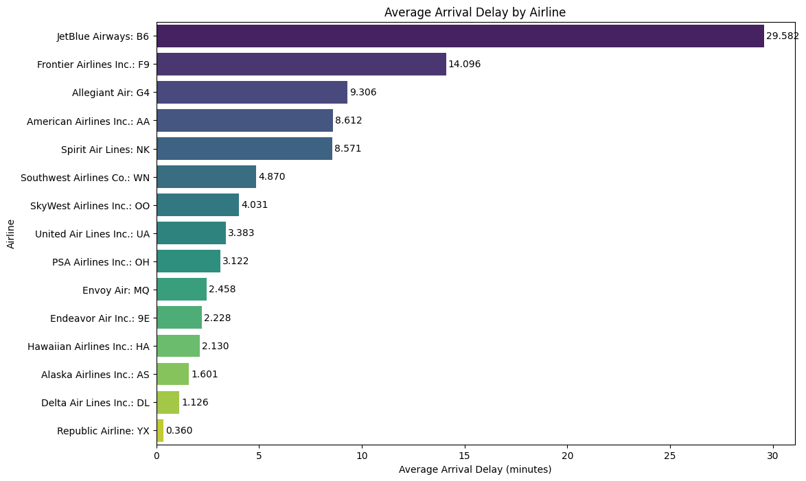
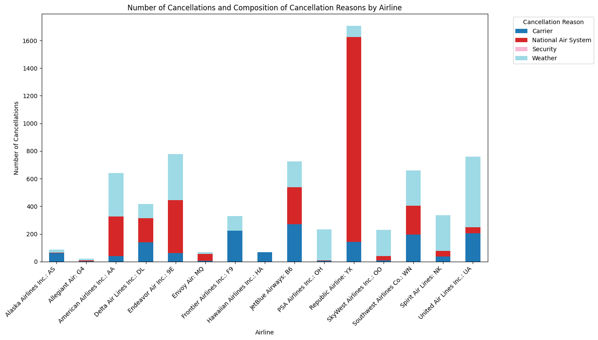
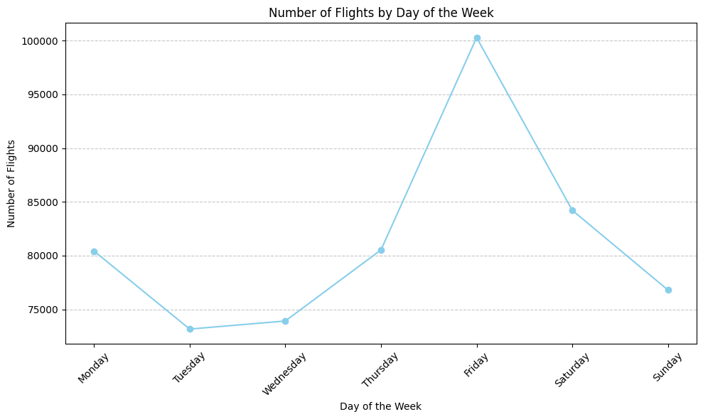

The data used in this report covers September 1 to September 30, 2023, showing daily flight operations throughout the entire month. sourced from the U.S. Department of Transportation’s Bureau of Transportation Statistics (BTS). The analysis covers key airline performance metrics, including flight cancellations, flight distances, and the number of flights.
# import necessary librariesimport pandas as pdimport matplotlib.pyplot as pltimport seaborn as snsimport pandas as pdimport matplotlib.pyplot as plt# Load dataal_perf = pd.read_csv("../../project data/Data/al_perf.csv")L_AIRLINE_ID = pd.read_csv("../../project data/Data/L_AIRLINE_ID.csv")L_AIRPORT_ID = pd.read_csv("../../project data/Data/L_AIRPORT_ID.csv")L_AIRPORT = pd.read_csv("../../project data/Data/L_AIRPORT.csv")L_CANCELATION = pd.read_csv("../../project data/Data/L_CANCELATION.csv")L_DISTANCE_GROUP_250 = pd.read_csv("../../project data/Data/L_DISTANCE_GROUP_250.csv")L_WEEKDAYS = pd.read_csv("../../project data/Data/L_WEEKDAYS.csv")
/var/folders/fd/zfxd46k90qd0bd_xk04w45r40000gn/T/ipykernel_13965/120632651.py:9: DtypeWarning: Columns (69,76,77,84) have mixed types. Specify dtype option on import or set low_memory=False.
al_perf = pd.read_csv("../../project data/Data/al_perf.csv")
1. Airlines Performance Analysis
# Merge airline names into al_perf using airline IDal_perf = al_perf.merge( L_AIRLINE_ID, how='left', left_on='DOT_ID_Reporting_Airline', # Column in al_perf with airline ID right_on='ID'# Column in L_AIRLINE_ID with airline ID)# Group by airline name and aggregate key metricsairline_perf = al_perf.groupby("Name").agg( avg_arr_delay=("ArrDelay", "mean"), # Average arrival delay per airline avg_dep_delay=("DepDelay", "mean"), # Average departure delay per airline total_cancel=("Cancelled", "sum"), # Total number of cancelled flights per airline total_flights=("Flights", "sum") # Total number of flights per airline).reset_index()# Calculate cancellation rateairline_perf["cancel_rate"] = airline_perf["total_cancel"] / airline_perf["total_flights"]
# 1. Average Arrival Delaydata = airline_perf.sort_values('avg_arr_delay', ascending=False)plt.figure(figsize=(12, 8))ax = sns.barplot(x='avg_arr_delay', y='Name', data=data, palette="viridis")for i, v inenumerate(data['avg_arr_delay']): ax.text(v +0.1, i, f"{v:.3f}", color='black', va='center') plt.title("Average Arrival Delay by Airline")plt.xlabel("Average Arrival Delay (minutes)")plt.ylabel("Airline")plt.show()
/var/folders/fd/zfxd46k90qd0bd_xk04w45r40000gn/T/ipykernel_13965/1551814142.py:4: FutureWarning:
Passing `palette` without assigning `hue` is deprecated and will be removed in v0.14.0. Assign the `y` variable to `hue` and set `legend=False` for the same effect.
ax = sns.barplot(x='avg_arr_delay', y='Name', data=data, palette="viridis")

It can be seen that JetBlue Airways has the longest average arrival delay at 29.582 minutes, while Republic Airline has the shortest at only 0.360 minutes. Overall, most airlines have an average delay between 1 and 15 minutes, with a few airlines, such as JetBlue and Frontier, experiencing relatively higher delays.
# 2. Average Departure Delaydata = airline_perf.sort_values('avg_dep_delay', ascending=False)plt.figure(figsize=(12, 8))ax = sns.barplot(x='avg_dep_delay', y='Name', data=data, palette="magma")for i, v inenumerate(data['avg_dep_delay']): ax.text(v +0.1, i, f"{v:.3f}", color='black', va='center') plt.title("Average Departure Delay by Airline")plt.xlabel("Average Departure Delay (minutes)")plt.ylabel("Airline")plt.show()
/var/folders/fd/zfxd46k90qd0bd_xk04w45r40000gn/T/ipykernel_13965/3867151348.py:4: FutureWarning:
Passing `palette` without assigning `hue` is deprecated and will be removed in v0.14.0. Assign the `y` variable to `hue` and set `legend=False` for the same effect.
ax = sns.barplot(x='avg_dep_delay', y='Name', data=data, palette="magma")
This plot shows the average departure delay for each airline. It can be seen that JetBlue Airways has the longest average departure delay at 33.673 minutes, while Hawaiian Airlines has the shortest at only 3.230 minutes. Overall, most airlines have an average delay between 4 and 18 minutes.
# 3. Total Cancelled Flightsdata = airline_perf.sort_values('total_cancel', ascending=False)plt.figure(figsize=(12, 8))ax = sns.barplot(x='total_cancel', y='Name', data=data, palette="coolwarm")for i, v inenumerate(data['total_cancel']): ax.text(v +0.1, i, f"{v:.0f}", color='black', va='center') plt.title("Total Cancelled Flights by Airline")plt.xlabel("Total Cancelled Flights")plt.ylabel("Airline")plt.show()
/var/folders/fd/zfxd46k90qd0bd_xk04w45r40000gn/T/ipykernel_13965/3656850973.py:4: FutureWarning:
Passing `palette` without assigning `hue` is deprecated and will be removed in v0.14.0. Assign the `y` variable to `hue` and set `legend=False` for the same effect.
ax = sns.barplot(x='total_cancel', y='Name', data=data, palette="coolwarm")
This graph shows that Republic Airline had the highest total number of cancelled flights, at 1,707 instances. The next highest was Endeavor Air (777 flights) and United Airlines (760 flights). In contrast, Allegiant Air, Hawaiian Airlines and Envoy Air had the fewest cancelled flights, with a total of less than 100 flights each. Overall, the number of cancelled flights for most airlines was concentrated around several hundred flights, while a few airlines had a higher number of cancellations, indicating that there are significant differences in flight cancellations among airlines.
# 4. Cancellation Rate - Scatter plotdata = airline_perf.sort_values('cancel_rate', ascending=False)plt.figure(figsize=(12, 6))plt.scatter(data['Name'], data['cancel_rate'], s=100, color='purple')for i, v inenumerate(data['cancel_rate']): plt.text(i, v +0.0005, f"{v:.4f}", ha='center')plt.xticks(rotation=45, ha='right')plt.title("Cancellation Rate by Airline")plt.xlabel("Airline")plt.ylabel("Cancellation Rate")plt.tight_layout()plt.show()
This graph shows the cancellation rates of flights by various airlines. It can be seen that Republic Airline has the highest cancellation rate at 6.87%, followed by Endeavor Air (4.49%) and JetBlue Airways (3.38%). In comparison, Allegiant Air, Envoy Air and SkyWest Airlines have the lowest cancellation rates, all below 0.5%. Overall, there is a significant difference in cancellation rates among different airlines. Most airlines have cancellation rates below 2%, while a few have higher rates.
2. Analysis of Cancellation of Flights
cancel_df = pd.read_csv("../csv/cancel.csv") # Cancellations by reasonplt.figure(figsize=(6,6))plt.pie(cancel_df['Number_Of_Cancellations'], labels=cancel_df['Cancellation_Reason'], autopct='%1.1f%%', startangle=140, colors=sns.color_palette("pastel"))plt.title("Proportion of Cancellations by Reason")plt.show()
The majority were due to National Air System issues (42.2%), followed by weather (37.0%), carrier-related reasons (20.7%), and security (almost 0). Overall, cancellations were mainly caused by system and weather-related factors.
# Merge airline namesdf = al_perf.merge(L_AIRLINE_ID, how='left', left_on='DOT_ID_Reporting_Airline', right_on='ID')# Merge cancellation reason namesdf = df.merge(L_CANCELATION, how='left', left_on='CancellationCode', right_on='Code')# Filter only cancelled flightscancelled_df = df[df['Cancelled'] ==1]# Group by airline and cancellation reasoncancel_summary = cancelled_df.groupby(['Name_y', 'Reason']).size().unstack(fill_value=0)# Calculate total cancellations per airlinecancel_summary['Total_Cancellations'] = cancel_summary.sum(axis=1)# Plot stacked bar chart (exclude total column for plotting)cancel_summary.drop(columns='Total_Cancellations').plot(kind='bar', stacked=True, figsize=(14, 8), colormap='tab20')plt.title("Number of Cancellations and Composition of Cancellation Reasons by Airline")plt.xlabel("Airline")plt.ylabel("Number of Cancellations")plt.xticks(rotation=45, ha='right')plt.legend(title='Cancellation Reason', bbox_to_anchor=(1.05, 1), loc='upper left')plt.tight_layout()plt.show()

The most frequent cancellations of Republic Airline flights are mainly due to National Air System. United Airlines and American Airlines also cancel a large number of flights. The main reasons include system issues and bad weather.
3. Analysis of Flight Distance
df1 = al_perf.merge( L_DISTANCE_GROUP_250, how='left', left_on='DistanceGroup', right_on='Code')distance_counts = df1['DistanceInterval'].value_counts().sort_index()plt.figure(figsize=(12,6))distance_counts.plot(kind='bar', color='skyblue')plt.title("Number of Flights by Distance Group")plt.xlabel("Distance Group")plt.ylabel("Number of Flights")plt.xticks(rotation=45, ha='right')plt.tight_layout()plt.show()
This bar chart shows the number of flights grouped by different flight distances. It can be seen that the flights with a distance of 250-499 miles have the largest number, totaling 132,890 flights. The next largest group is 500-749 miles (116,028 flights) and 750-999 miles (92,091 flights). Short-haul flights (less than 250 miles) also account for a certain proportion (67,535 flights), while long-haul flights (2,500 miles and above) are relatively few (11,360 flights). Overall, the number of medium and short-haul flights is significantly higher than that of long-haul flights, indicating that airline operations are mainly focused on short and medium-range routes.
df2 = df1.merge(L_CANCELATION, how='left', left_on='CancellationCode', right_on='Code')cellled_df = df2[df2['Cancelled'] ==1]cancel_summary_distance =cellled_df.groupby(['DistanceInterval', 'Reason']).size().unstack(fill_value=0)plt.figure(figsize=(12,8))cancel_summary_distance.plot( kind='barh', stacked=True, colormap='tab20', ax=plt.gca())plt.title("Number of Cancellations by Distance Group and Reason")plt.xlabel("Number of Cancellations")plt.ylabel("Distance Group")plt.legend(title='Cancellation Reason', bbox_to_anchor=(1.05, 1), loc='upper left')plt.tight_layout()plt.show()
The cancellation situations of different flight distances show significant differences. For short and medium-range flights (250-999 miles), the main reasons are the National Air System and weather factors, while for long-range flights (1,000 miles and above), the cancellations are relatively fewer.
4. Analysis of Flight Numbers
df3 = al_perf.merge(L_WEEKDAYS, how='left', left_on='DayOfWeek', right_on='Code')flights_per_day = df3.groupby('Day')['FlightDate'].count()week_order = ['Monday', 'Tuesday', 'Wednesday', 'Thursday', 'Friday', 'Saturday', 'Sunday']flights_per_day_ordered = flights_per_day.reindex(week_order)plt.figure(figsize=(10,6))flights_per_day_ordered.plot(kind='line', marker='o', color='skyblue')plt.title("Number of Flights by Day of the Week")plt.xlabel("Day of the Week")plt.ylabel("Number of Flights")plt.xticks(rotation=45)plt.grid(axis='y', linestyle='--', alpha=0.7)plt.tight_layout()plt.show()

These pictures show the number of flights for each day of the week. Friday has the most flights (100,284), while Tuesday has the fewest (73,166). This trend may be due to business travel being concentrated at the start of the week and leisure travel increasing toward the weekend, resulting in the highest flight numbers on Friday and Saturday.
df_avg = pd.read_csv("../csv/mini_project_<problem7_Mingyang_Han_mh2393>.csv")df_avg["date_flight"] = pd.to_datetime(df_avg["date_flight"])# Calculate the actual number of flights per day from al_perfal_perf["FlightDate"] = pd.to_datetime(al_perf["FlightDate"])daily_flights = al_perf.groupby("FlightDate").size().reset_index(name="Flights")# Merge the daily actual flights with the 3-day average flightsdf_plot = pd.merge(df_avg, daily_flights, left_on="date_flight", right_on="FlightDate", how="left")plt.figure(figsize=(12,6))# Plot the average flights over the preceding 3 daysplt.plot(df_plot["date_flight"], df_plot["Avg_Flights_Preceding_3_Days"], marker='o', color='skyblue', label='Avg Flights Preceding 3 Days')# Plot the actual flights per dayplt.plot(df_plot["date_flight"], df_plot["Flights"], marker='s', color='orange', label='Actual Flights')for x, y inzip(df_plot["date_flight"], df_plot["Avg_Flights_Preceding_3_Days"]): plt.text(x, y +5, f"{y:.0f}", ha='center', va='bottom', fontsize=8)for x, y inzip(df_plot["date_flight"], df_plot["Flights"]): plt.text(x, y +5, f"{y}", ha='center', va='bottom', fontsize=8)plt.title("Average Flights Over Previous 3 Days vs Actual Flights", fontsize=16)plt.xlabel("Date", fontsize=12)plt.ylabel("Number of Flights", fontsize=12)plt.xticks(rotation=45)plt.grid(axis='y', linestyle='--', alpha=0.7)plt.legend()plt.tight_layout()plt.show()
This set of data shows the changes in the actual daily flight numbers compared to the average flight numbers over the past three days. Overall, there is a certain pattern in the number of flights: there are fewer flights during weekdays, and the number increases significantly on weekends and Fridays. The average number of flights over the three days remains between 17,700 and 19,800, indicating that there is a cyclical fluctuation in flight schedules, showing a regular trend of lower numbers on weekdays and higher numbers on weekends.